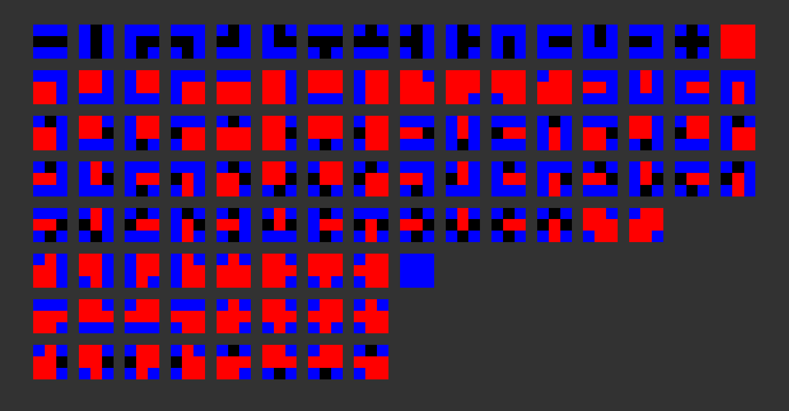
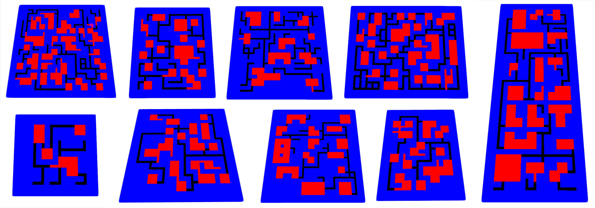
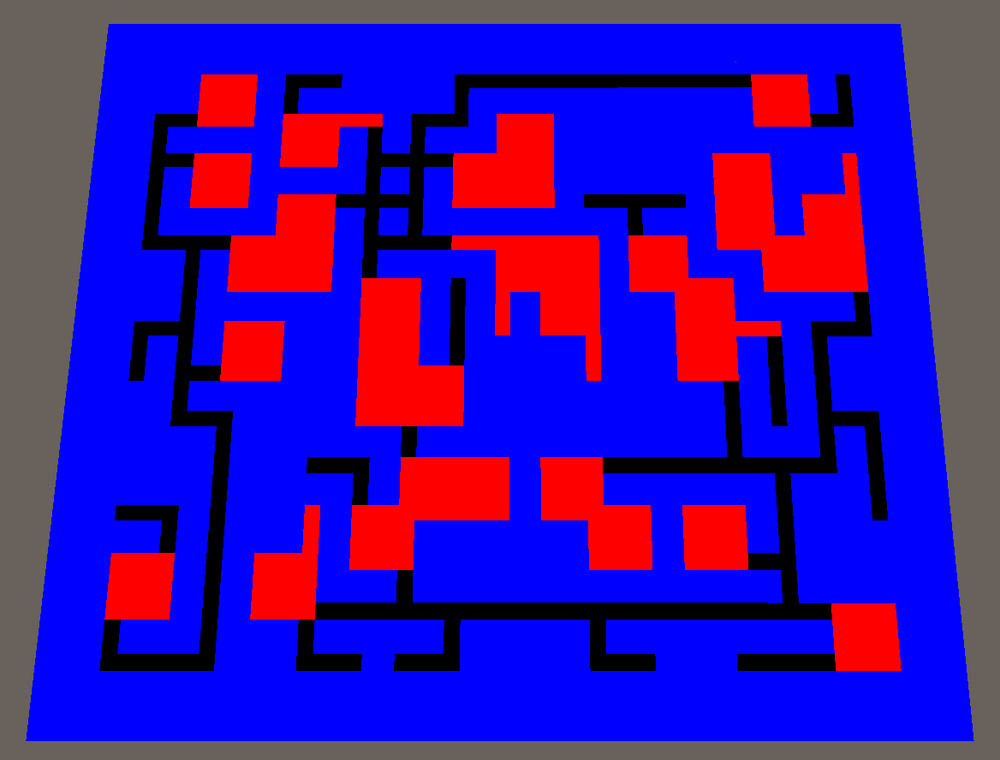
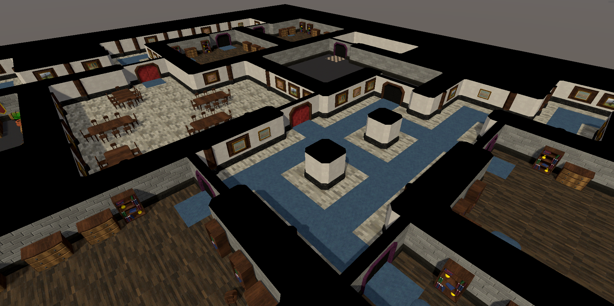
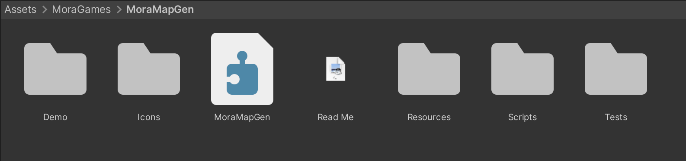
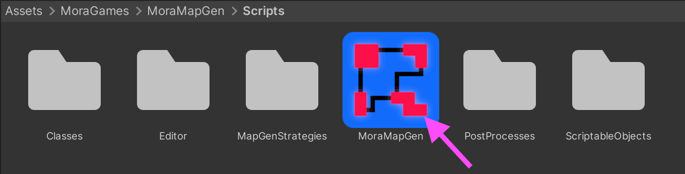

Overview
How This Works
This tool creates unique level layouts consisting of rooms and corridors using a procedural generation technique called "Wave Function Collapse" (WFC). A set of sprites defines all the possible options of room and corridor pieces.

These sprites are then placed in a grid to create all kinds of layouts:

Then prefabs are placed to turn the layout into a useable level:
 
The generation process follows these steps:
- WFC Algorithm: Generates a 2D layout using sprite templates.
- Area Assignment: Assigns Area Definitions to rooms and corridors.
- Module Spawning: Places 3D module prefabs (walls, floors, ceilings, and doors.)
- Map Baking: Creates the BakedMap data structure for runtime access.
- Post-Processes: Things such as prop placement and navmesh baking happen. (See Mapgen Post-Processes)
File Structure

Demo Folder
Contains various example scenes that are ready for you to simply press "Play" to see them in action.
Icons folder
Contains the images used as custom icons to differentiate the different ScriptableObject and Monobehaviour assets for easier readability in the editor.
Resources
Contains a sprite sheet that is used to determine the possible tile templates for generating rooms and corridors. You can edit the sprite sheet to add or remove tiles to suit your needs.
Scripts
Contains all of the code for this asset. One of the only scripts you will need to use is "MoraMapGen" which is a Monobehaviour that you add to your scene.

Tests
Contains Unit Tests that can be run via the Test Runner window to validate the generation system.
Object Structure
The MoraMapGen system uses a hierarchical asset structure: MoraMapGen component > Settings asset > Area Options asset > Area Definition assets > Tile Module Definition assets > Module prefabs
Data Flow
Generation Time:
The system creates a GenMap containing all generation data.
After Generation:
The system "bakes" the map into a BakedMap for efficient runtime access.
Runtime Access:
Use MoraMapGen.BakedMap to access rooms, corridors, waypoints, and more. You can either access it via reference to the MoraMapGen component, or receive it when it is ready by adding a listener to MoraMapGen.OnBakedMapReady